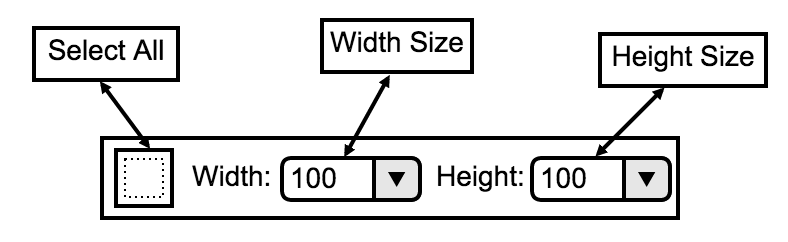
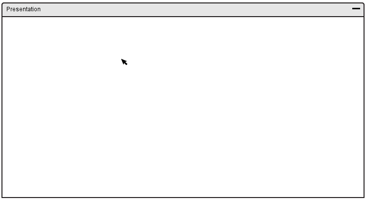
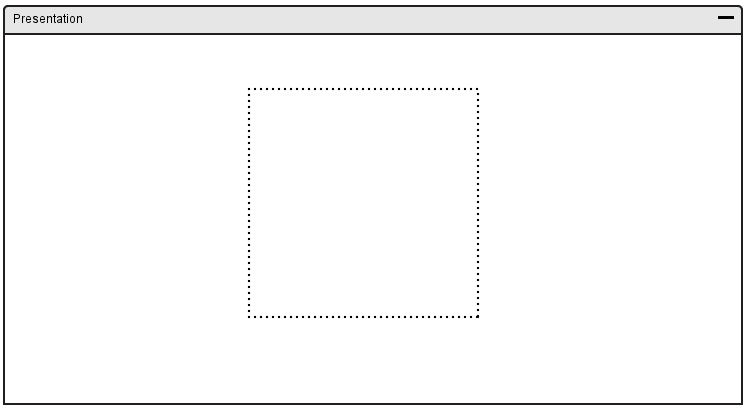

The selector tool gives the user the ability to select certain parts of the canvas in order to modify a specific region of the canvas.
In response to the user clicking the selector tool icon, the overall toolbar is replaced and displays options specific to selection. An overview of the selector toolbar is shown in Figure 53.

Figure 53: Selector Toolbar Overview.
The selector toolbar has several options including:

Figure 54: Selector Tool - Before
Select the area you want to start the selection at by clicking and holding.

Figure 55: Selector Tool - After
Release your mouse where you want to finish the selection.